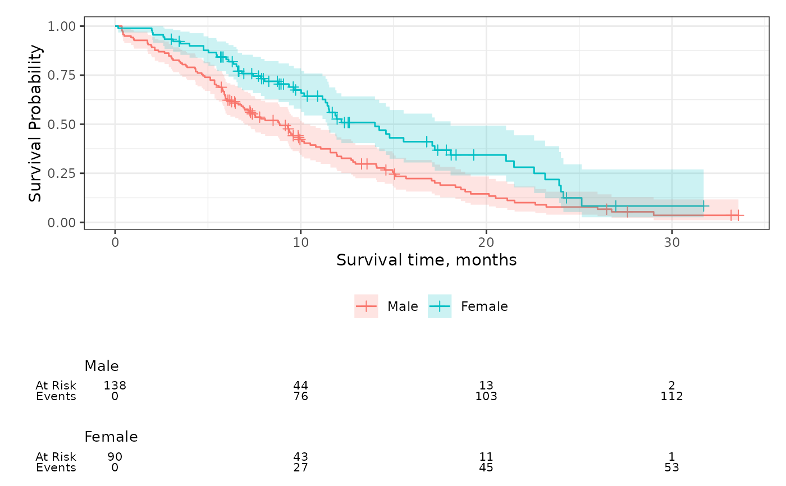
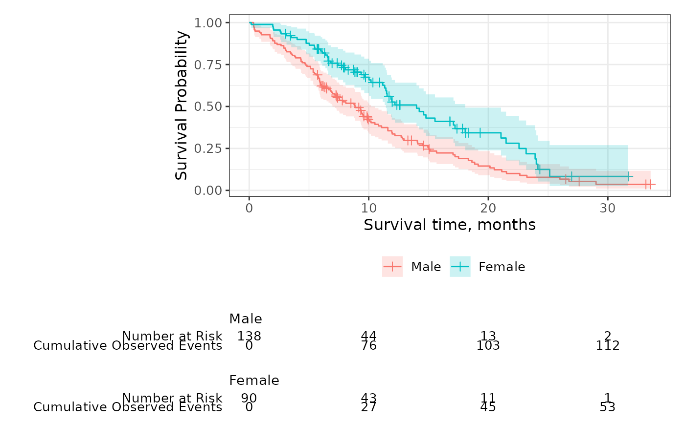
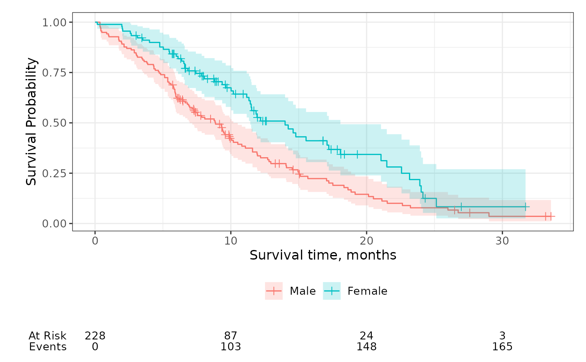

Add risk tables below the plot showing the number at risk, events observed, and number of censored observations.
Usage
add_risktable(
times = NULL,
risktable_stats = c("n.risk", "cum.event"),
risktable_group = c("auto", "strata", "risktable_stats"),
risktable_height = NULL,
stats_label = NULL,
combine_groups = FALSE,
theme = theme_risktable_default(),
size = 3.5,
...
)Arguments
- times
numeric vector of times where risk table values will be placed. Default are the times shown on the x-axis. The times passed here will not modify the tick marks shown on the figure. To modify which tick marks are shown, use
ggplot2::scale_x_continuous(breaks=).- risktable_stats
character vector of statistics to show in the risk table. Must be one or more of
c("n.risk", "cum.event", "cum.censor", "n.event", "n.censor"). Default isc("n.risk", "cum.event")."n.risk"Number of patients at risk"cum.event"Cumulative number of observed events"cum.censor"Cumulative number of censored observations"n.event"Number of events in time interval"n.censor"Number of censored observations in time interval
- risktable_group
String indicating the grouping variable for the risk tables. Default is
"auto"and will select"strata"or"risktable_stats"based on context."strata"groups the risk tables per stratum when present."risktable_stats"groups the risk tables per risktable_stats.
- risktable_height
A numeric value between 0 and 1 indicates the proportion of the final plot the risk table will occupy.
- stats_label
named vector or list of custom labels. Names are the statistics from
risktable_stats=and the value is the custom label.- combine_groups
logical indicating whether to combine the statistics in the risk table across groups. Default is
FALSE- theme
A risk table theme. Default is
theme_risktable_default()- size, ...
arguments passed to
ggplot2::geom_text(...). Pass arguments like,size = 4to increase the size of the statistics presented in the table.
Competing Risks
The ggcuminc() can plot multiple competing events.
The "cum.event" and "n.event" statistics are the sum of all events across
outcomes shown on the plot.
Examples
p <-
survfit2(Surv(time, status) ~ sex, data = df_lung) %>%
ggsurvfit() +
add_censor_mark() +
add_confidence_interval()
p + add_risktable()

p +
add_risktable(
risktable_stats = c("n.risk", "cum.event"),
stats_label = list(
cum.event = "Cumulative Observed Events",
n.risk = "Number at Risk"
),
risktable_group = "strata",
)

p +
add_risktable(
risktable_stats = c("n.risk", "cum.event"),
combine_groups = TRUE
)
